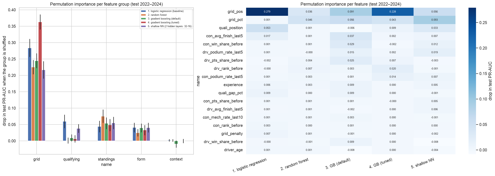
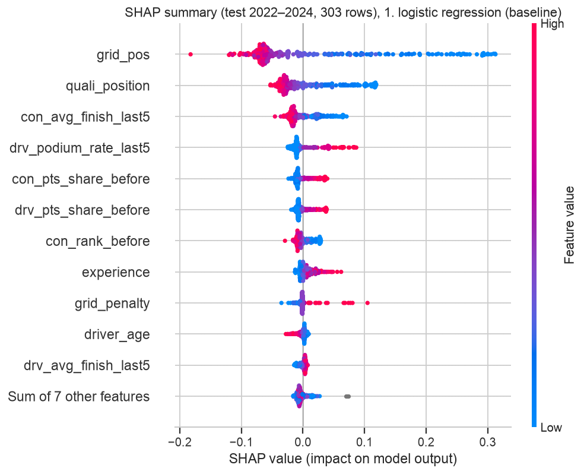
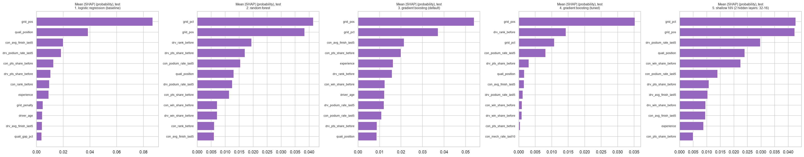
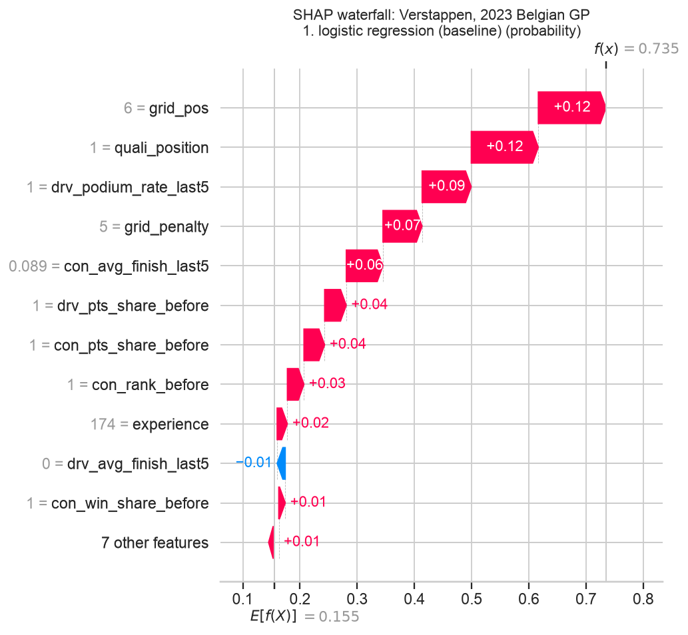
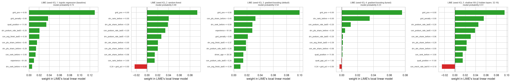

con_pts_share_before is important because strong teams both score points and finish on the podium; giving a team points would not make its cars faster. Correlated features also share importance. Every statement in this section describes the models' behaviour, not the sport.We explain all five models, leading with the recommended one, the logistic regression (Section 4.5); the other four serve as a cross-check of whether very different models rely on the same information. All explanations are computed on the unseen test seasons (2022–2024); explaining does not choose anything, so this does not leak.
PermutationExplainer for all five models, in probability units, on the original feature values. The background ("a typical driver") is 100 training rows from 2003–2019, the seasons with complete qualifying data, like every row we explain (D26). For every explained row the base value plus the contributions equals the model's probability (largest gap 1e-8).We shuffle one feature's values across the test rows, which breaks its link to the outcome, and measure how much test PR-AUC drops (20 repeats). We also shuffle whole groups together, which is fairer for correlated features: shuffling only grid_pos still leaves grid_pct intact.

| group shuffled | LR | RF | GB default | GB tuned | NN |
|---|---|---|---|---|---|
| grid | 0.284 | 0.225 | 0.245 | 0.363 | 0.217 |
| qualifying | 0.060 | 0.001 | 0.009 | 0.006 | 0.038 |
| standings | 0.044 | 0.076 | 0.054 | 0.049 | 0.055 |
| form | 0.041 | 0.025 | 0.040 | 0.033 | 0.041 |
| context | 0.002 | 0.002 | −0.009 | 0.000 | −0.000 |
Table 5.1 Drop in test PR-AUC when a whole group is shuffled.
grid_pos is clearly above 0 in every model; most single standings and form features are not, because a correlated partner takes over when one is shuffled. This is why the group view is the fairer one.
| input (scaled) | weight |
|---|---|
| grid_pos | −1.482 |
| missing: quali_gap_pct | +0.880 |
| quali_position | −0.333 |
| missing: grid_penalty | −0.282 |
| missing: quali_position | −0.282 |
| con_avg_finish_last5 | −0.205 |
| con_rank_before | −0.163 |
| drv_podium_rate_last5 | +0.161 |
| con_pts_share_before | +0.130 |
| drv_pts_share_before | +0.107 |
Table 5.2 The largest logistic-regression weights: change in log-odds per standard deviation, the others held fixed.
| share of mean |SHAP| | LR | RF | GB default | GB tuned | NN |
|---|---|---|---|---|---|
| grid | 37.6% | 38.7% | 35.9% | 58.8% | 34.3% |
| standings | 16.5% | 33.0% | 25.2% | 25.0% | 21.8% |
| form | 20.0% | 19.3% | 21.0% | 14.1% | 27.6% |
| qualifying | 20.2% | 8.1% | 6.7% | 2.1% | 11.6% |
| context | 5.7% | 0.9% | 11.2% | 0.0% | 4.8% |
Table 5.3 Each model's total mean |SHAP| on the explained test rows, split by feature group.

grid_pos or grid_pct is the top feature everywhere. Five very different models rely on the same information: where the car starts, and how strong the driver and team have been.grid_pos −1.48 vs grid_pct −0.01) split shared information; read the group totals, not single numbers.We explain a well-known test case: Max Verstappen at the 2023 Belgian GP. He was fastest in qualifying, took a 5-place gearbox penalty, started 6th, and won. Inputs: grid 6 of 20, qualifying position 1, grid_penalty 5; leading both championships (points share 1.00, win share 0.82, team win share 1.00); podiums in all of his last 5 races; no team mechanical failures in the last 10 races.

| model | probability | decision |
|---|---|---|
| logistic regression | 0.735 | podium |
| random forest | 0.490 | podium |
| gradient boosting (default) | 0.538 | podium |
| gradient boosting (tuned) | 0.230 | podium |
| shallow NN | 0.513 | podium |
Table 5.4 All five models say "podium" at their own thresholds. He won.
| LR, grid slot given | probability |
|---|---|
| P1 (penalty 0) | 0.840 |
| P6 (actual, penalty 5) | 0.735 |
| P10 (penalty 9) | 0.623 |
Table 5.5 Model what-if (model behaviour, not a causal claim).
grid_pos (+0.118), quali_position (+0.117) and drv_podium_rate_last5 (+0.086): his pole lap is credited, even though he started 6th.For the logistic regression, the forest and the network, the highest probability given to a driver who did not podium is the same row: Verstappen at the 2024 Australian GP, on pole and leading both championships (LR 0.849). He retired with a brake failure. For the LR every group pushed up (grid +0.313, form +0.139, standings +0.118, qualifying +0.101). Nothing in the pre-race data could have announced a component failure: the models rank the field well but cannot foresee breakdowns or crashes (Section 4.7).
LIME creates perturbed copies of the row, asks the model about each, and fits a small weighted linear model around that point. It describes features by ranges (e.g. grid_pos ≤ 6), changes features independently (so some synthetic rows are impossible), and is random, so we ran it with 5 seeds.

| LIME condition (LR) | mean weight | seeds in top 10 |
|---|---|---|
| grid_pos ≤ 6 | +0.131 | 5/5 |
| grid_penalty > 0 | +0.041 | 5/5 |
| quali_position ≤ 11 | +0.032 | 5/5 |
| drv_podium_rate_last5 > 0.20 | +0.022 | 5/5 |
| con_avg_finish_last5 ≤ 0.39 | +0.022 | 5/5 |
Table 5.6 LIME weights for the logistic regression, averaged over 5 seeds. Local fit R² 0.69–0.70; LIME's own prediction 0.28 against the model's 0.735.
grid_pos ≤ 6 is the largest weight in all 5 seeds, followed by a qualifying or standings condition with the same sign SHAP gave.